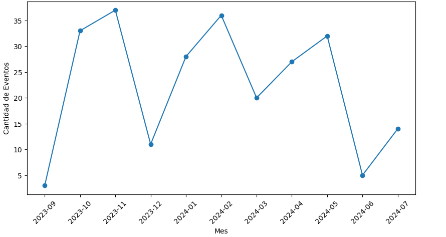
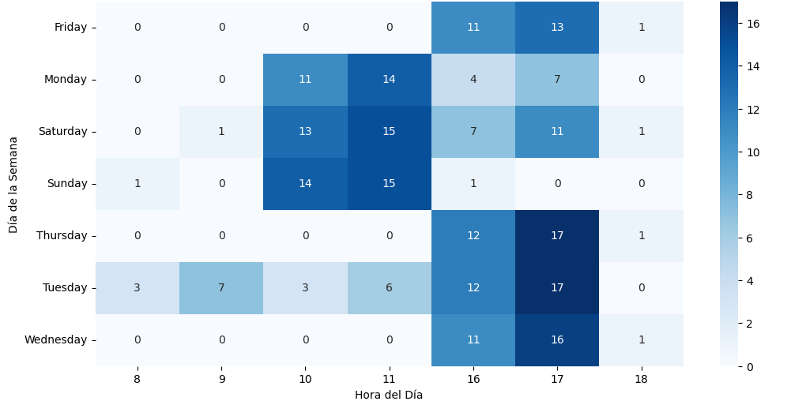
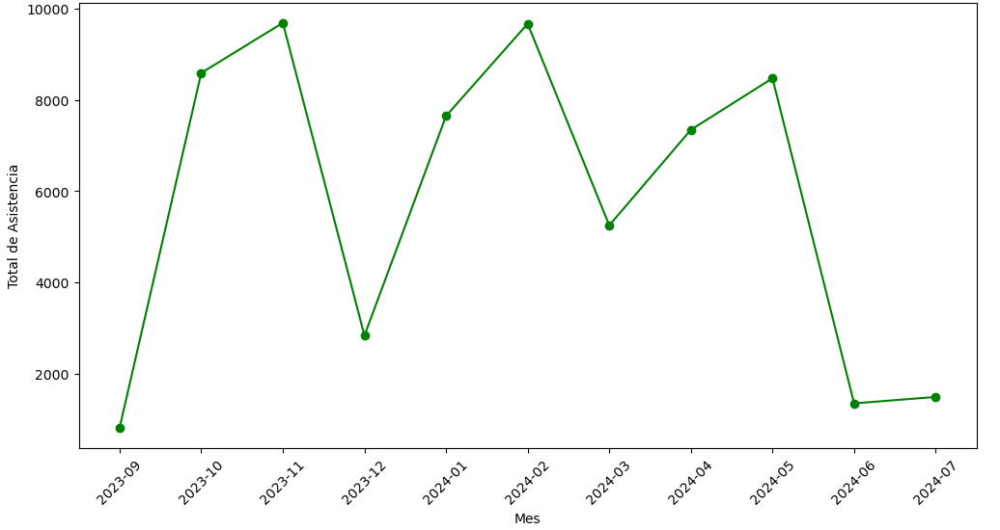
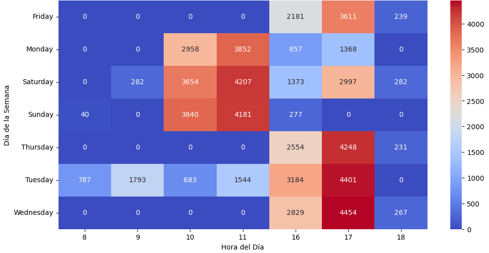

Visualización de Datos
En esta sección se presentan diferentes gráficos y representaciones visuales que permiten
analizar la distribución de los datos, identificar tendencias y patrones clave para la
toma de decisiones.
Gráfico de Distribución
# Contar la cantidad de cada tipo de acto
tipo_acto_counts = df_combinado['tipo'].value_counts()
# Crear la gráfica de pastel (queso)
plt.figure(figsize=(8, 8))
plt.pie(tipo_acto_counts, labels=tipo_acto_counts.index, autopct='%1.1f%%', startangle=90,
wedgeprops={'edgecolor': 'black'})
# Añadir título
plt.title('Distribución de Tipos de Actos en la Temporada')
# Mostrar la gráfica
plt.show()
Gráfico de Actos por tipo

# Contar la cantidad de cada formato
formato_counts = df_combinado['formato'].value_counts()
# Crear un diccionario que mapea cada formato a su tipo
formato_a_tipo = df_combinado.set_index('formato')['tipo'].to_dict()
# Definir colores basados en el campo 'tipo'
colores = ['orange' if formato_a_tipo[formato].lower() == 'conferencia'
else 'blue' if formato_a_tipo[formato].lower() == 'concierto'
else 'gray'
for formato in formato_counts.index]
# Crear la gráfica de barras con colores personalizados
plt.figure(figsize=(12, 6))
plt.bar(formato_counts.index, formato_counts.values, color=colores)
# Añadir etiquetas y título
plt.xlabel("Formato del Acto")
plt.ylabel("Cantidad de Actos")
plt.title("Cantidad de Actos por Formato")
# Rotar etiquetas del eje X para mejorar visibilidad
plt.xticks(rotation=90)
# Mostrar la gráfica
plt.show()
Gráfico de actos por formato

tipo_acto_counts = df_combinado['tipo'].value_counts()
plt.figure(figsize=(12, 6))
plt.bar(tipo_acto_counts.index, tipo_acto_counts.values)
plt.xlabel("Tipo de Acto")
plt.ylabel("Cantidad de Actos")
plt.title("Cantidad de Actos por Tipo")
plt.xticks(rotation=90)
plt.show()
Gráfico de la evolución de los eventos a lo largo de la temporada

df_combinado['fecha'] = pd.to_datetime(df_combinado['fecha'])
df_combinado['mes'] = df_combinado['fecha'].dt.to_period('M')
eventos_por_mes = df_combinado['mes'].value_counts().sort_index()
plt.figure(figsize=(10, 5))
plt.plot(eventos_por_mes.index.astype(str), eventos_por_mes.values, marker='o', linestyle='-')
plt.xlabel("Mes")
plt.ylabel("Cantidad de Eventos")
plt.title("Evolución de Eventos a lo Largo de la Temporada")
plt.xticks(rotation=45)
plt.show()
Gráfico de la densidad de asistencia por tipo de acto
plt.figure(figsize=(12, 6))
sns.violinplot(x=df_combinado['tipo'], y=df_combinado['Total_Validadas'], inner="quartile")
plt.xlabel("Tipo de Acto")
plt.ylabel("Asistencia Validada")
plt.title("Densidad de Asistencia por Tipo de Acto")
plt.xticks(rotation=90)
plt.show()
Gráfico de la distribución de eventos por día y hora

df_combinado['hora'] = pd.to_datetime(df_combinado['fecha']).dt.hour
df_combinado['dia_semana'] = pd.to_datetime(df_combinado['fecha']).dt.day_name()
tabla_horarios = df_combinado.pivot_table(index='dia_semana', columns='hora', aggfunc='size',
fill_value=0)
plt.figure(figsize=(12, 6))
sns.heatmap(tabla_horarios, cmap="Blues", annot=True, fmt="d")
plt.xlabel("Hora del Día")
plt.ylabel("Día de la Semana")
plt.title("Distribución de Eventos por Día y Hora")
plt.show()
Gráfico de la asistencia promedio por tipo de acto
# Calcular la asistencia promedio por tipo de acto
asistencia_promedio = df_combinado.groupby("tipo")["Total_Validadas"].mean().sort_values()
# Crear la gráfica de barras
plt.figure(figsize=(12, 6))
plt.bar(asistencia_promedio.index, asistencia_promedio.values, color='skyblue')
# Añadir etiquetas
plt.xlabel("Tipo de Acto")
plt.ylabel("Asistencia Promedio")
plt.title("Asistencia Promedio por Tipo de Acto")
# Rotar etiquetas del eje X
plt.xticks(rotation=90)
# Mostrar la gráfica
plt.show()
Gráfico de la evolución de la asistencia a lo largo del tiempo

# Convertir la fecha a formato datetime y agrupar por mes
df_combinado['fecha'] = pd.to_datetime(df_combinado['fecha'])
df_combinado['mes'] = df_combinado['fecha'].dt.to_period('M')
asistencia_por_mes = df_combinado.groupby("mes")["Total_Validadas"].sum()
# Crear la gráfica de líneas
plt.figure(figsize=(12, 6))
plt.plot(asistencia_por_mes.index.astype(str), asistencia_por_mes.values, marker='o',
linestyle='-', color='green')
# Etiquetas
plt.xlabel("Mes")
plt.ylabel("Total de Asistencia")
plt.title("Evolución de la Asistencia a lo Largo del Tiempo")
# Rotar etiquetas del eje X
plt.xticks(rotation=45)
# Mostrar la gráfica
plt.show()
Gráfico de asistencia por día de la semana y hora

# Extraer día de la semana y hora
df_combinado["hora"] = pd.to_datetime(df_combinado["fecha"]).dt.hour
df_combinado["dia_semana"] = pd.to_datetime(df_combinado["fecha"]).dt.day_name()
# Crear tabla con asistencia por día y hora
tabla_asistencia = df_combinado.pivot_table(index="dia_semana", columns="hora",
values="Total_Validadas", aggfunc="sum", fill_value=0)
# Crear heatmap
plt.figure(figsize=(12, 6))
sns.heatmap(tabla_asistencia, cmap="coolwarm", annot=True, fmt=".0f")
# Etiquetas
plt.xlabel("Hora del Día")
plt.ylabel("Día de la Semana")
plt.title("Asistencia por Día de la Semana y Hora")
plt.show()
Gráfico de la asistencia promedio por formato
# Calcular la asistencia promedio por formato
asistencia_por_formato =
df_combinado.groupby("formato")["Total_Validadas"].mean().sort_values()
# Crear un diccionario para mapear formato → tipo de evento
formato_a_tipo = df_combinado.set_index("formato")["tipo"].to_dict()
# Asignar colores basados en el tipo de evento
colores = ['blue' if formato_a_tipo[formato] == 'Concierto' else
'orange' if formato_a_tipo[formato] == 'Conferencia' else 'gray'
for formato in asistencia_por_formato.index]
# Crear la gráfica de barras con colores personalizados
plt.figure(figsize=(12, 6))
plt.bar(asistencia_por_formato.index, asistencia_por_formato.values, color=colores)
# Añadir etiquetas y título
plt.xlabel("Formato del Acto")
plt.ylabel("Asistencia Promedio")
plt.title("Asistencia Promedio por Formato")
# Rotar etiquetas del eje X para mejor visibilidad
plt.xticks(rotation=90)
# Mostrar la gráfica
plt.show()
×

Análisis visual y deducciones del comportamiento del público
La visualización de los datos ha permitido identificar patrones claros en cuanto a la naturaleza y
distribución temporal de los eventos culturales
celebrados en la sede de la Fundación durante la temporada 2023/2024.
En primer lugar, se observa que el tipo de evento predominante fue el concierto, con un
60,2% del total de actos,
frente al 39,8% correspondiente a conferencias. Esta diferencia se refleja también en el
volumen total de asistentes y en la media
de asistencia validada, siendo los conciertos, en general, los eventos que generan una mayor atracción de
público.
Si analizamos la temática o formato específico de los actos, se aprecia una notable
concentración en pocos formatos recurrentes,
destacando los Ciclos de conferencias y los conciertos de Jóvenes Intérpretes, que juntos
representan una proporción significativa
de toda la oferta cultural. Estas temáticas reflejan un claro interés por el contenido especializado, tanto
divulgativo como musical.
A nivel temporal, la distribución mensual de eventos presenta picos de actividad en los
meses de octubre, noviembre,
enero y febrero, coincidiendo con periodos lectivos o de mayor actividad institucional. Se
detectan caídas marcadas en diciembre y junio,
lo que puede vincularse a vacaciones o festivos.
En cuanto a la distribución por días y franjas horarias, los datos muestran que los eventos
tienden a concentrarse en horarios
de tarde, especialmente entre las 16:00 y 18:00 horas. Los miércoles, jueves y
sábados aparecen como los días
de mayor actividad cultural, tanto en cantidad de eventos como en volumen de asistencia.
En cuanto a la asistencia promedio según la tipología, los conciertos siguen liderando con
una media superior a los 270 asistentes,
seguidos por conferencias con algo más de 230. Esta diferencia refuerza la idea de una preferencia del
público por eventos musicales, aunque las conferencias
también mantienen una participación sólida y constante.
Por último, si se analiza la asistencia por formato específico, se confirma que aquellos
más institucionalizados o repetitivos
(como conciertos didácticos, ciclos temáticos o cine en la March) alcanzan cifras de validación superiores a
los 250 participantes de media, lo que
sugiere una fidelización del público hacia determinadas líneas de programación.
En conjunto, los datos evidencian una programación cultural equilibrada, pero con claras preferencias hacia
ciertos días, horas y formatos.
Esta información podría ser utilizada para optimizar futuras planificaciones, reforzando aquellas líneas que
demuestran mayor impacto y acogida
entre el público asistente.